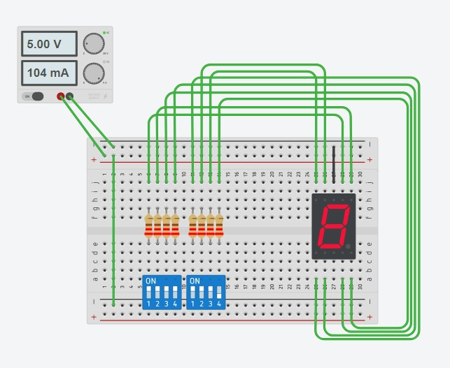
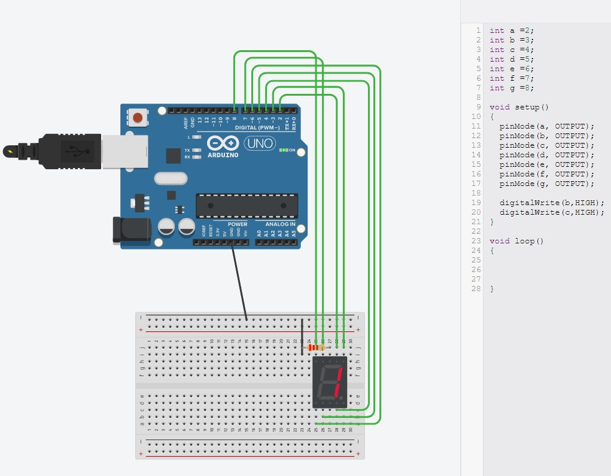
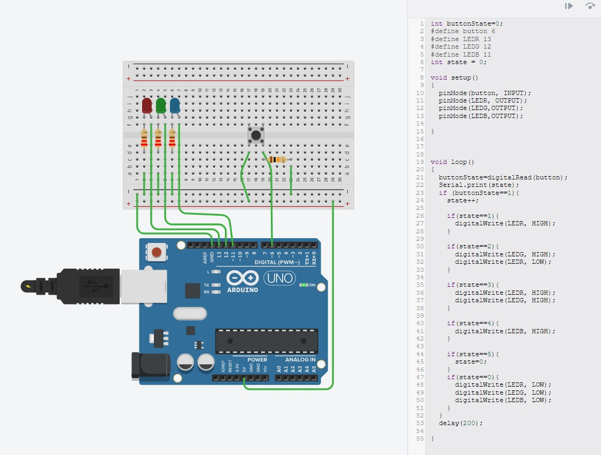

Projects
This page is the documentation of the things I learn throughout the course!
ThinkerCad
Here i will learning the use of ThinkerCad. I will be experimenting with creting circuits and using arduino.
the first experiment is to create a circuit for a 7 segment display using dip switches.

the second experiment is to control the 7 segment display using a arduino UNO. In the code for the arduino, i delcared which pins of the arudino is connected to each pins for the 7 segment display. Then i set all the pins to OUTPUT. To write to the 7 segment display, i just need to set the pin on the 7 segment display to HIGH.

The third experiment is to create led counter using arduino. to create the counter, a variable "state" is created which will keep track the number of times it is pressed. each time it it pressed, the state will change base on the if statement, which till light up the corresponding leds. keep note that the delay at the end is important to prevent the button from counting multiple times when being pressed.

copyright © kong qi hao